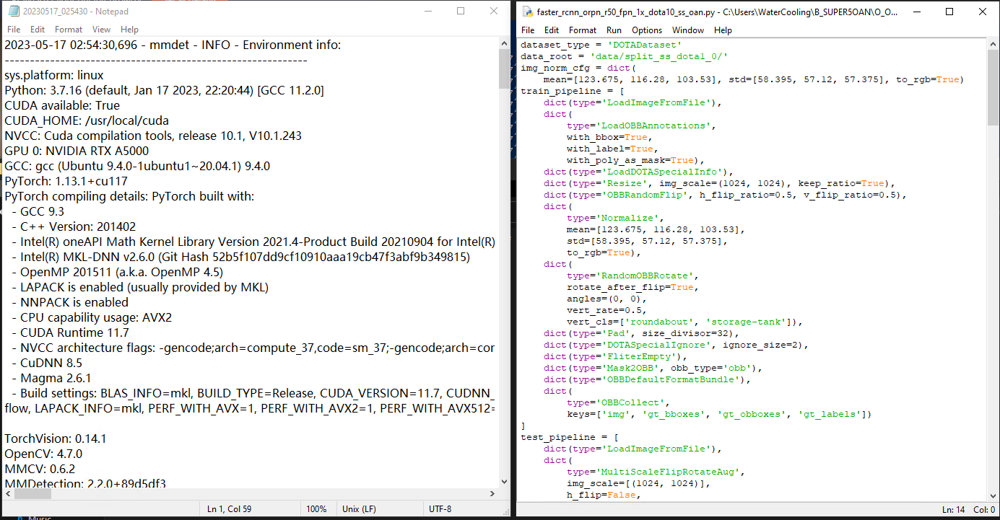

## OAN Reshape Step by steps explain the crucial code e.g. the oan.py under config <!-- --> --- <!-- --> ## OAN Reshape Step by steps explain the crucial code e.g. the oan.py under config # 1 Installation <!-- --> --- <!-- --> ## 1.1 Install miniconda3 && pytorch 1.1.a create oan environment ```conda conda create -n oan -y python=3.7 conda activate oan ``` 1.1.b install pytorch ```conda conda install pytorch==1.13.0 torchvision==0.14.0 torchaudio==0.13.0 pytorch-cuda=11.7 -c pytorch -c nvidia ``` <!-- --> --- <!-- --> ## 1.2 Verify the torch installation 1.2.a Enter the python envrionment ```conda (oan) PS C:\Users\Git\OAN> python ``` Output shows the python version is 3.7 ```python Python 3.7.16 (default, Jan 17 2023, 16:06:28) [MSC v.1916 64 bit (AMD64)] :: Anaconda, Inc. on win32 Type "help", "copyright", "credits" or "license" for more information. ``` <!-- --> --- <!-- --> ## 1.2 Verify the torch installation 1.2.b Under python prompt and check if the torch cuda is available ```python >>> import torch >>> torch.cuda.is_available() True >>> ^Z ``` <!-- --> --- <!-- --> ## 1.3 BboxToolKit Install BboxToolkit ```conda cd BboxToolkit pip install -v -e . # or "python setup.py develop" ``` Output ```conda Running setup.py develop for BboxToolkit Running command python setup.py develop running develop running build_ext Creating c:\users\git\miniconda3\envs\oan\lib\site-packages\BboxToolkit.egg-link (link to .) Adding BboxToolkit 1.1 to easy-install.pth file Installed c:\users\git\oan\bboxtoolkit C:\Users\Git\miniconda3\envs\oan\lib\site-packages\setuptools\command\easy_install.py:147: EasyInstallDeprecationWarning: easy_install command is deprecated. Use build and pip and other standards-based tools. EasyInstallDeprecationWarning, C:\Users\Git\miniconda3\envs\oan\lib\site-packages\setuptools\command\install.py:37: SetuptoolsDeprecationWarning: setup.py install is deprecated. Use build and pip and other standards-based tools. setuptools.SetuptoolsDeprecationWarning, Successfully installed BboxToolkit-1.1 cycler-0.11.0 fonttools-4.38.0 kiwisolver-1.4.5 matplotlib-3.5.3 packaging-23.2 pyparsing-3.1.1 python-dateutil-2.8.2 ``` <!-- --> --- <!-- --> ## 1.4 Install mmdetection ### a. Install mmcv ```python pip install mmcv==0.6.2 ``` Output ```conda Building wheels for collected packages: mmcv Building wheel for mmcv (setup.py) ... done Created wheel for mmcv: filename=mmcv-0.6.2-cp37-cp37m-win_amd64.whl size=206407 sha256=be7c9c11eeac6776e58c8e20adab8d1b84ef9e2ad1a09cdf567be4fa532ea506 Stored in directory: c:\users\git\appdata\local\pip\cache\wheels\00\00\f1\ea823230a52a2d9b12582aa59e10445f50a943b08bce9051d4 Successfully built mmcv Installing collected packages: addict, zipp, typing-extensions, tomli, pyyaml, platformdirs, importlib-metadata, yapf, mmcv Attempting uninstall: typing-extensions Found existing installation: typing_extensions 4.3.0 Uninstalling typing_extensions-4.3.0: Successfully uninstalled typing_extensions-4.3.0 Successfully installed addict-2.4.0 importlib-metadata-6.7.0 mmcv-0.6.2 platformdirs-3.11.0 pyyaml-6.0.1 tomli-2.0.1 typing-extensions-4.7.1 yapf-0.40.2 zipp-3.15.0 ``` <!-- --> --- <!-- --> ## 1.4 Install mmdetection ### b. Install build requirements and then install mmdetection. (We install our forked version of pycocotools via the github repo instead of pypi for better compatibility with our repo.) ```conda # back to mmdetection dir pip install -r requirements/build.txt pip install mmpycocotools pip install pillow==6.2.2 pip install -v -e . # or "python setup.py develop" ``` <!-- --> --- <!-- --> ## 1.5 Download Pytorch Model |model|oan|dataset|ss|BaiDu disk|Google Drive| |:-------:|:--:|:----:|:--:|:--:|:--:| |faster rcnn oan|√|dota-v1.0|√|[key:fc4n](https://pan.baidu.com/s/1pEIfJo1DdKLQzCQEH6v1qQ?pwd=fc4n)|[model](https://drive.google.com/file/d/1Yl29PZ8yBCib1aLQiBAb6NYTyqRzrzY0/view?usp=share_link)| |retinanet oan|√|dota-v1.0|√|[key:uq8b](https://pan.baidu.com/s/1GB9ztvoMgGe404wX-Mr4Kw?pwd=uq8b)|[model](https://drive.google.com/file/d/1Ltb_fyCycgncBhuVcAOsUjd0mlDgvcgZ/view?usp=sharing)| |roi trans oan|√|dota-v1.0|√|[key:jyww](https://pan.baidu.com/s/1D2J26xssLAYD6xwUd_XlSg?pwd=jyww)|[model](https://drive.google.com/file/d/1YSy15XmEO1KM6N9h7eKoYOZ1av5G3Vo0/view?usp=share_link)| |oriented rcnn r50 oan|√|dota-v1.0|√|[key:bpyb](https://pan.baidu.com/s/1_EfOUw0rmJvEePQia1nCcw?pwd=bpyb)|[model](https://drive.google.com/file/d/1WSjEhHezWy83AAiVgQeMItc6UrMBk3ps/view?usp=share_link)| |oriented rcnn x50 oan|√|dota-v1.0|√|[key:umtg](https://pan.baidu.com/s/15W4oeKLJy5aLUnK2Sajn8A?pwd=umtg)|[model](https://drive.google.com/file/d/1ad_ZiYCufP7hbkAnntr99UUkm9dVWVGR/view?usp=share_link)| Download the Pytorch model and save in OAN directory ``` OAN ├── PTH │ ├──faster_rcnn_obb_r50_fpn_1x_dota10_oan.pth │ ├──retinanet_obb_r50_fpn_1x_dota10_oan.pth │ ├── ``` <!-- --> --- <!-- --> ## 2 Run OAN ## 2.1 BboxToolKit spilt images ### Splitting images (for DOTA) The DOTA images are too big to train. We need to split the image before training. ```shell cd BboxToolkit/tools tree ``` Output ```shell └─split_configs ├─dota1_0 ├─dota1_5 └─dota2_0 ``` <!-- --> --- <!-- --> The Dota split config json files. (E.g. ms_test.json) ```json { "nproc": 10, "load_type": "dota", "img_dirs": [ "data/DOTA1_0/test/images/" ], "ann_dirs": null, "classes": null, "prior_annfile": null, "merge_type": "addition", "sizes": [ 1024 ], "gaps": [ 200 ], "rates": [ 1.0 ], "img_rate_thr": 0.6, "iof_thr": 0.7, "no_padding": false, "padding_value": [ 104, 116, 124 ], "save_dir": "data/split_ss_dota1_0/test/", "save_ext": ".png" } ``` <!-- --> --- <!-- --> We shall put the dota dataset images under `BboxToolKit/tools/data` And the output data will be saved in the `data/split_ss_dota1_0/test/` directory. We can modify the path to the expected path of the The Dota split config json files. (E.g. ms_test.json) ```json { "img_dirs": [ "data/DOTA1_0/test/images/" ], "save_dir": "data/split_ss_dota1_0/test/", "save_ext": ".png" } ``` <!-- --> --- <!-- --> Also, the sizes and gaps of the images can be changed in json config file. ```json "sizes": [ 1024 ], "gaps": [ 200 ], ``` we can refer to BboxToolKit github for more information <!-- --> --- <!-- --> ## 3 inference ```shell # inference on a single image python demo/huge_image_demo.py demo/large_image.jpg configs/oan/faster_rcnn_roitrans_r50_fpn_1x_dota10_oan.py P_PTH/faster_rcnn_roitrans_r50_fpn_1x_dota10_oan.pth BboxToolkit/tools/split_configs/dota1_5/ss_test.json output.png ``` We can also select the specific image of DOTA datasets to inference ```shell # inference on a single image python demo/huge_image_demo.py /demo/P2805.png configs/oan/faster_rcnn_roitrans_r50_fpn_1x_dota10_oan.py P_PTH/faster_rcnn_roitrans_r50_fpn_1x_dota10_oan.pth BboxToolkit/tools/split_configs/dota1_5/ss_test.json output.png ``` ```shell # inference on a single image python demo/image_demo.py data/split_ss_dota1_0/test/images/P1971_0005.png configs/oan/faster_rcnn_obb_r50_fpn_1x_dota10_oan.py P_PTH/faster_rcnn_obb_r50_fpn_1x_dota10_oan.pth O_OUTPUT/OUT_P1971_0005.png ``` <!-- --> --- <!-- --> ## 4 Testing ```shell python tools/test.py configs/oan/faster_rcnn_orpn_r50_fpn_1x_dota10_ss_oan.py P_PTH/faster_rcnn_orpn_r50_fpn_1x_dota10_ss_oan.pth --format-only ``` <!-- --> --- <!-- --> the outputs of the testing shall be like this ```shell dota_submission_dir$ ls Task1_baseball-diamond.txt Task1_harbor.txt Task1_roundabout.txt Task1_storage-tank.txt Task1_basketball-court.txt Task1_helicopter.txt Task1_ship.txt Task1_swimming-pool.txt Task1_bridge.txt Task1_large-vehicle.txt Task1_small-vehicle.txt Task1_tennis-court.txt Task1_ground-track-field.txt Task1_plane.txt Task1_soccer-ball-field.txt zip ``` <!-- --> --- <!-- --> e.g. ask1_ship.txt ```shell P0298 0.9981546998023987 298.63 631.09 288.81 676.31 6.90 615.07 16.72 569.86 P0298 0.9966198205947876 810.12 112.31 806.46 131.43 749.94 120.60 753.61 101.48 P0298 0.9939270615577698 876.93 162.96 873.93 181.51 815.12 172.01 818.12 153.45 P0298 0.9933449029922485 880.58 128.89 876.50 147.04 824.11 135.27 828.19 117.12 P0298 0.993104875087738 721.14 130.94 716.89 149.22 663.58 136.83 667.83 118.55 P0298 0.9930562376976013 500.18 790.48 487.60 851.96 60.43 764.56 73.01 703.08 P0298 0.9925026893615723 820.13 341.33 815.88 359.16 763.03 346.55 767.28 328.72 P0298 0.9919962286949158 832.38 306.50 828.92 324.70 763.71 312.33 767.16 294.13 P0298 0.9904623627662659 702.75 552.19 688.91 614.42 232.03 512.78 245.88 450.54 ``` <!-- --> --- <!-- --> ## 5 Training ```shell python tools/train.py configs/oan/faster_rcnn_obb_r50_fpn_1x_dota10_oan.py ``` .center[] <!-- --> --- <!-- --> ## 5 Training The trained outputs will be like this ```shell 20230529_202330.log epoch_11.pth epoch_2.pth epoch_5.pth epoch_8.pth latest.pth 20230529_202330.log.json epoch_12.pth epoch_3.pth epoch_6.pth epoch_9.pth epoch_10.pth epoch_1.pth epoch_4.pth epoch_7.pth faster_rcnn_obb_r50_fpn_1x_dota10_oan.py ```